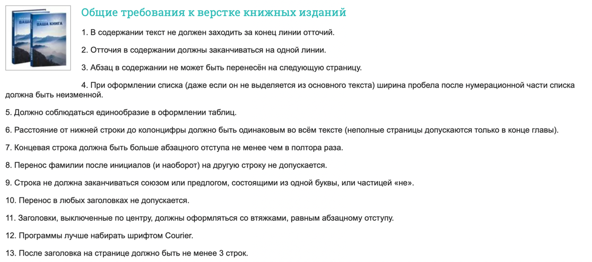
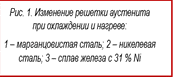
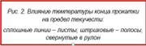

Теория:
1) Авторский оригинал. Издательский оригинал. Основные требования, предъявляемые
издательствами к авторским оригиналам.
Авторский оригинал – это текстовая часть произведения, подготовленная автором (коллективом
авторов) для передачи в издательство и последующей редакционно-издательской обработки. Он служит основой для
изготовления издательского текстового оригинала.
Издательский оригинал – это текстовая часть произведения, прошедшая редакционно-издательскую
обработку; подписанная в печать или в набор ответственными лицами издательства; подготовленная к сдаче на
предприятие для изготовления печатной формы.
Требования к авторским оригиналам:
Комплектность – те полнота его составных частей. Должен включать:
Титульный лист
Основной текст со всеми его элементами (иллюстраци, таблицы, формулы) +
введение, послесловие, если есть.
Второй экземпляр текстовой части
Рабочее оглавление
Авторские оригиналы иллюстраций
Текст подписей к иллюстрациям
2) Титульные элементы издания. Виды и оформление титульного листа.
Обложка должна содержать название книги и фамилию автора/ов, остальные сведения
необязательны.
Титульный лист – страница, предшествующая тексту книги. На ней размещаются: фамилия автора, заглавие
книги, название книги, издательство и его марки, наименование организации, выпустившего книгу, фамилию
редактора, переводчика, указание о книге как о учебнике.
Контртитул – добавочный титул, помещаемый с левой стороны на одном развороте с титулом главным
образом в многотомных и переводных изданиях. В многотомных: содержит сведения, относящиеся ко всему изданию,
в то время как на титуле – относящиеся к этому тому. В переводных же изданиях содержит фамилию автора и
название на оригинальном языке.
Фронтиспис – рисунок, размещаемый с левой стороны на одном развороте с титулом. Обычно это портрет
автора или лица, о котором написана книга. Часто это рисунок, отражающий основные элементы содержания книги,
в этом случае подпись под ним не ставится.
Шмуцтитул – отдельная страница на нечетной полосе, занятая рубрикой раздела или части книги, в иногда
и номером раздела.
Авантитул – первая страница двойного титульного листа. Обычно открывает книгу. Он образуется, когда
титульный лист делается разворотным (или когда помещают фронтиспис). Вводят, чтобы издание не начиналось с
пустой страницы. Могут быть напечатаны надзаголовочные данные, перенесенные с титульного листа, марка,
девиз, эпиграф. Авантитул стараются не загружать, если есть фронтиспис.
3) Стандартные форматы книг и область их применения.
- Миниатюрный
(70-100)×(100-125). Словари размером с ладонь, путеводители;
- Уменьшенный (карманный)
(100-130)×(140-177); Художественная литература в бумажной обложке, некоторые словари.
- Стандартный
(130-145)×(200-215). Большая часть художественной литературы и учебников издается этом формате.
- Увеличенный
170×(215-260). Некоторые детские издания, специальная литература.
- Энциклопедический
(205-220)×(260-270). Большинство энциклопедических изданий имеет такой размер.
- Очень большой
(245-265)×(340-410). Художественные альбомы, атласы, детские книги.
Форматы книг принято указывать сокращенно. Например, выражение 60×90/16 обозначает, что формат книги
составляет 1/16 долю листа бумаги размером 60×90 см.
4) Классификация шрифтов.
Шрифт — это система визуального отображения информации при помощи условных символов. В более узком значении это комплект литер, цифр и специальных знаков определённого рисунка.
Основные признаки шрифта
■Рисунок (гарнитура)
■Начертание
■Размер (кегль)
Начертание - это комплект строчных и прописных знаков, цифр, знаков препинания.
Отличаются - насыщенностью, пропорциями, контрастностью, и наклоном знаков.
Начертания распространённые:
Normal - обычный
Bold - полужирный
Italic - курсив и наклонный
Bold Italic - полужирный курсив
Condensed - узкий
Extended - широкий
Насыщенность — это отношение толщины основного штриха к внутреннему просвет и в зависимости от этого они могут быть:
Светлый
Полужирный
Жирный шрифт
По наклону:
Прямые
Наклонные
Курсивные
По плотности:
Нормальный (3/4)
Широкий
Узкий шрифт
Кегль - это величина площадки, на которой размещается знак (буква). Размер кегля определяется в пунктах.
• РУБЛЕНЫЕ ШРИФТЫ — малоконтрастные, не имеющие засечек;
• ШРИФТЫ С ЕДВА НАМЕТИВШИМИСЯ ЗАСЕЧКАМИ — среднеконтрастные, с несколько утолщенными концами вертикальных штрихов;
• МЕДИЕВАЛЬНЫЕ — с умеренной контрастностью и небольшими засечками, близкими по форме к треугольнику; оси округлых букв с небольшим наклоном;
• ОБЫКНОВЕННЫЕ ШРИФТЫ — с контрастными штрихами и тонкими длинными засечками, соединяющимися с вертикальными штрихами под прямым углом; оси округлых букв вертикальны;
• БРУСКОВЫЕ ШРИФТЫ — малоконтрастные, с длинными утолщенными засечками в форме брусков, соединенными с основными штрихами под прямым углом с едва заметными закруглениями;
• НОВЫЕ МАЛОКОНТРАСТНЫЕ ШРИФТЫ — с длинными утолщенными засечками, имеющими закругленные концы и соединенными с основными штрихами под прямым углом с небольшими закруглениями.
5) Конструктивные элементы книги.
1) Книжный блок - В твердых переплетах книжные листы формируются в тетради (1),
как правило по 8 листов, из которых и состоит книжный блок. Листы в тетрадках скрепляются нитками либо
бесшвейным скреплением. Самый распространенный и самый надежный способ — шитье нитками.
А) Корешковый материал (марля или бумага). Корешок книжного блока для большей прочности
оклеивается специальной полиграфической марлей либо спанбондом.
Б) Капта́л или капта́льная лента — элемент книжного переплёта, используемый для крепления
книжного блока к переплётным крышкам. Придаёт конструкции книги дополнительную надёжность. Располагается в
верхней и нижней частях корешка книги, представляет собой поперечный жгут или шнур.
В) Бумажная полоска - Предназначена для укрепления корешка книжного блока.
Г) Ляссе (ленточка-закладка) - тесьма, прикрепляемая к корешку блока таким образом, чтобы ее
конец выходил за пределы нижнего обреза блока.
2) Переплетная крышка - Лист плотного картона, к которому крепятся остальные элементы книги.
Переплетные крышки изготавливаются вручную либо на специальном оборудовании (крышкоделательные машины).
Снаружи переплет обклеивается специальными материалами, выполняющими защитную и декоративную функцию.
А) Картонные сторонки - выкроенная из листа картона деталь переплетной крышки, служащая
основойпереплета, придающая ему твердость.
Б) Отстав — полностью повторяет форму и размер корешка блока. Изготавливается из полукартона и
приклеивается на покрывной материал между сторонками. В собранном виде служит и называется корешком книги.
В) Расстав — расстояние между картонной сторонкой и корешком.
Г) Шпация — 2 расстава + отстав.
Д) Покровный материал — кожа, бумвинил, коленкор, ледерин, ткань и т.д.
3) Кант - Выступающая часть переплетной крышки над обрезанным с трех сторон блоком.
4) Форзац - Сложенный пополам лист бумаги или оттиска (односгибная тетрадь). Служит связующим
звеном между книжным блоком и переплетной крышкой. Существуют несколько видов форзацев. Наиболее часто
применяется простой приклейной форзац — односгибная тетрадь из специальной форзацной бумаги. В книгах
большого объема (толщиной блока свыше 30 мм) применяют приклейной форзац с окантовкой — полоской из бумаги
или коленкора шириной 16-20 мм.
5) Суперобложка - Бумажная дополнительная обертка поверх переплета (обложки), закрепленная на нем
только загнутыми краями — клапанами. Используется как элемент внешнего оформления издания для защиты его
переплета от повреждений, загрязнений, а также в рекламных целях.
6) Норма и сигнатура -
Норма — краткое название издания или номер заказа, под которым
издание проходит в производстве.
Сигнатура — номер печатного листа. Служат для контроля
правильности подборки.
12) Справочно-вспомогательные элементы издания.
6) Аппарат книжного издания.
21)
Виды дополнительного текста в различных изданиях.
12) Справочно-вспомогательный текст - это аппарат книги, создающий условия для
ориентации читателей в книге. К нему относятся аннотации, посвящения, эпиграфы, предисловия, послесловия,
примечания, приложения. Это также разнообразные указатели, содержания, оглавления, список иллюстраций,
колонтитулы и т.д.
6/21) Аппаратом книги принято называть совокупность материалов, которые дополняют основной
текст, поясняют его, позволяют читателю быстрее отыскивать нужные элементы текста и легче воспринимать
содержащуюся в книге информацию.
1. Дают возможность читателям опознать это издание среди других и узнать о нем самое главное:
каково его тематическое содержание, кому оно адресовано, кем, когда и где выпущено (выходные сведения).
Выходные сведения служат для регистрации издания, его библиотечно-библиографической обработки и в
статистических целях. Лучшее место для выходных сведений — последняя страница книги. В виде исключения
выходные сведения могут быть помещены на нижней части оборотной страницы титула.
2. Знакомят с тем, каково тематическое содержание издания (произведения) и как оно построено
(оглавление) или каков его состав, какие произведения оно включает (содержание),
и убыстряют поиск произведений и (или) их подразделов. Оглавление можно поместить и в начале книги и в
самом ее конце. В русских изданиях его чаще располагают в конце. С точки зрения культуры чтения оглавление
лучше размещать в начале книги: читатель именно с оглавления начинает знакомство с изданием, а это как раз
то, что нужно для подготовки к чтению. Оглавление в начале книги обычно ставят сразу за титульным листом, до
предисловия и других частей издания, а в конце книги — непосредственно перед надвыпускными и выпускными
данными, т.е. практически им замыкают издание. В серийных изданиях место оглавления должно быть постоянным
для всех выпусков серии.
3. Облегчают поиск тех или иных материалов в тексте вспомогательные указатели. Колонтитул —
краткое название раздела, главы. Он часто используется в справочных изданиях и называется справочным.
Справочный колонтитул заверстывается вверху наборной полосы и входит в ее размер. В книжных изданиях
(особенно часто в стихотворных) колонтитул имеет вид колонлинейки и называется декоративным колонтитулом. В
газетных изданиях колонтитул заверстывается внизу наборной полосы и входит в ее размер. Колонцифры —
заверстываются вверху или внизу наборной полосы. Колонцифры, расположенные внизу полосы, не входят в формат
наборной полосы и должны быть отбиты от текста полосы пробелом от 4 до 12 п., при этом стремятся
использовать размер отбивки меньше кегля шрифта, используемого для набора колонцифры. Колонцифры,
расположенные вверху полосы, заверстываются в строке колонтитула, если он есть, и в этом случае входят в
формат наборной полосы.
4. Указатели. Предметные указатели оформляются следующим образом: алфавитные переходы выделяются
либо пробельной строкой, либо полужирной буквой в первом слове, либо и тем и другим одновременно. Чтобы не
повторять одно и то же слово (термин) много раз, его набирают только один раз, а далее заменяют знаком тире.
5. Подготавливают читателя к работе с изданием, раскрывая его особенности (предисловие). Это
вспомогательный текст, сообщающий читателю о содержании книги, о ее научном, художественном, справочном или
другом значении. Предисловия могут быть редакционными или авторскими. Желательно, чтобы предисловие (как и
любой вводный материал, стоящий до основного текста книги) занимало четное количество страниц. Тогда
основной текст книги будет начинаться на правой, нечетной странице.
6. Помогают разобраться в сложностях и тонкостях содержания публикуемых произведений
(вступительная статья, послесловие, примечания и комментарии). Послесловие — элемент затекстового аппарата
издания, то есть завершающая часть издания, в котором поясняется и дополняется содержание основного текста.
Примечания и комментарии - элементы аппарата книги, помогающие разобраться в сложностях ее содержания.
Комментарии - это развернутые тексты, дающие толкование произведения в целом с той или иной стороны или
толкование его отдельных фрагментов.
Внутритекстовые примечания- При наборе основного текста шрифтом кегль 10 пунктов примечания нужно
набирать шрифтом кегль 8 пунктов на тот же формат, что и основной текст, но с обязательной небольшой
отбивкой от последнего. При наборе основного текста шрифтом кегль 8 пунктов примечания (за исключением
примечаний в компактных изданиях малого формата) набирают также шрифтом кегль 8 пунктов с втяжкой - отступом
от левого края вдвое большим, чем абзацный отступ в основном тексте.
Примечания в конце книги - Примечания помещаются в конце книги непосредственно после основного текста.
Чтобы легче было находить такие примечания, во многих книгах они имеют сквозную нумерацию, повторяющуюся в
тексте. В изданиях художественной литературы подобные примечания, как правило, не нумеруются; обычно
указываются страница и слово или выражение, к которым относится примечание.
7. Аннотация - Назначение аннотации – облегчить библиографическую, книготорговую и библиотечную
классификацию книг. Аннотация дополняет текст титула и кратко объясняет содержание книги и ее назначение.
Место аннотации - оборотная сторона титула; рекомендуемый шрифт - кг. 8 строчной светлый, формат набора
узкий.
8. Списки условных обозначений - Списки условных обозначений надо набирать шрифтом того же кегля,
что и кегль шрифта основного текста книги, а может быть, иногда даже и повышенного кегля. Такой прием
оформления условных обозначений придает им большую удобочитаемость и привлекает к себе внимание читателя.
9. Эпиграф - Традиционное место для эпиграфов - правая часть начальной страницы. Если эпиграфы
даются к каждому разделу книги или к каждой главе, то они помещаются под заглавием. Если эпиграф относится
ко всему тексту книги, его место либо над заглавием на первой странице текста, либо на отдельной печатной
странице перед титулом или после него. Размер шрифта для эпиграфов должен быть меньше кегля шрифта основного
текста.
10. Методические тексты - К методическим текстам в учебниках относятся: "Упражнения", "Вопросы и
ответы", "Опыты", "Примеры" и пр. Каждая группа строк вспомогательного текста отбивается небольшим пробелом
от основного текста. Иногда помимо шрифтового оформления методических текстов приходится вводить и
нешрифтовые приемы оформления (линейки или рамки).
11. Подписи под иллюстрациями - В книгах подписи под иллюстрациями набирают в красную строку, то
есть без абзаца в первой строке и с установкой последней строки посередине. Формат набора подписи не должен
выходить за пределы изобразительного поля рисунка. Кегль шрифта для подписей меньше, чем кегль шрифта
основного текста.
12. Сноски - В виде сносок помещают различные ссылки, разъяснения терминов и определений,
библиографические справки, примеры и замечания и т.д. Тексты сносок могут быть как авторскими, так и
редакционными. Знаки сносок - арабская цифра, звездочка (со скобкой или без нее). Знак сноски в виде цифры
целесообразно применять при большом количестве сносок, в виде звездочек - при малом количестве сносок.
Нумерация сносок может быть постраничная или сквозная на всю главу, часть или целую книгу.
13. Приложения - В научной, учебной и инструктивной литературе часто даются приложения - перечень
официальных документов, справочный табличный материал и т.п. Приложения оформляются так же, как
соответствующие элементы основного текста, но набирают их обычно шрифтом пониженного кегля.
14. Хронологические списки - В виде хронологических списков могут быть представлены даты жизни и
деятельности различных личностей, исторические даты и т.п. Их набирают двумя отдельными столбцами следующим
образом: левый столбец - фамилии или события и их даты, правый - пояснения.
• 15. Библиографические списки - Приняты два способа составления и размещения библиографических
списков: по порядку ссылок на издания в авторском тексте и по алфавиту. Порядок расположения текста в
библиографическом списке устанавливается единый, например: фамилия автора, его инициалы, ученая степень или
звание, название труда, издательство, место и год издания.
Существует пять функций аппарата книги:
I. Опознавательная-оповещающая функция
• Надо, чтобы каждая книга отличалась от всех других, имела свое лицо, свое имя. Эту функцию выполняют
выходные сведения — комплекс опознавательных сведений о книге на ее наиболее приметных местах: титульном
листе (лицо и оборот); переплете; концевой странице.
II. Справочно-поисковая функция
Книга должна быть рассчитана на все виды работ с нею, поэтому в книге должен быть хороший
справочно-поисковой аппарат:
• оглавление или содержание;
• вспомогательные указатели к содержанию книги;
• колонтитулы.
III. Подготовительно-ориентирующая функция
Для эффективной работы с книгой необходимо знать ее особенности, для этого ее оснащают:
• предисловием;
• аннотацией;
• рефератом.
Они помогают читателю лучше подготовиться к чтению успешнее овладевать содержанием книги.
IV. Справочно-пояснительная функция
Не все тексты просты для понимания. Вступительными статьями, примечаниями и комментариями можно и нужно
помочь читателю в сложностях таких произведений.
V. Источниковедческая и литературно-просветительская функция
Библиографические ссылки, прикнижные списки и указатели составляют библиографический аппарат книги
отвечающий этой функции.
• Содержание и форма элементов, помогающих книге выполнять эти функции не могут быть одинаковыми для
всех книг. Каждая книга своеобразна.
7) Композиция внутренних элементов книги.
Что и где располагается/может располагаться (отношение основного текста и доп. текста в
виде сносок примечаний, предисловия, посвящения и т.п.)
11) Требования, предъявляемые при верстке.
17) Верстка печатного издания. Основные ошибки верстки.
25) Технические правила верстки книжных изданий.

11) Исходя из функций верстки, она должна отвечать строгим требованиям дизайна и обеспечивать определенные
моменты:
• Наиболее выгодную композиционную структуру издания (верстка наглядно демонстрирует структуру и
композицию страниц издания, определяет какие компоненты текста или иллюстраций являются главными, а какие
второстепенными).
• Компактное расположение материалов на странице и максимальное использование полезной площади бумаги.
• Эстетический, привлекательный и выразительный внешний вид будущего печатного издания, удобное для
чтения и восприятия человеческим глазом.
Единообразие верстки равенство всех спусков на начальных полосах, равенство отбивок всех заголовков и
подзаголовков различных рангов, примечаний в тексте, сносок, подписей под рисунками, одинаковый̆ способ
заверстки однотипных иллюстраций, одинаковая отбивка колонтитулов и колонцифр и т.п.
17) Основные ошибки при вёрстке:
Различная высота полос текста
Разный интерлиньяж на соседних страницах. Отсутствие приводности текста – это полное совпадение
общих
размеров четных и нечетных полос, а также точное совмещение строк основного текста на этих полосах между
собой (на
просвет). Достигается приводность верстки путем приведения всех частей текста, набранного шрифтами кегля,
отличного
от основного, а также формул, таблиц и иллюстраций к целому числу строк основного кегля с помощью отбивок
сверху и
снизу.
Висячая строка — неполная строка, которая остается на странице одна, когда весь абзац текста — на
другой.
Также «висячими строками» называют и концевые строки, расположенные в начале полосы. Технические правила
запрещают наличие таких строк в сверстанном издании, т.к. они ухудшают удобочитаемость текста, а также
искажают
внешний вид полосы набора.
Допускается размещать в конце или начале полосы абзац из одной строки (например, в прямой речи, когда
строка
является одновременно и концевой и абзацной).
Способ устранения: вгонка и выгонка строк.
Вгонкой строки называют уменьшение числа набранных строк за счет уменьшения междусловных
пробелов в
предшествующих строках.
Выгонкой строки называют увеличение числа набранных строк за счет увеличения междусловных
пробелов в
предшествующих строках, в процессе которого за счет части текста длинной концевой строки образуют новую
концевую
строку.
Жидкие строки – образуются из-за нетехнологичных межсловных пробелов, в связи с отсутствием
переносов или
при наличии слов из другого языка, которые программа автоматически не может разбить на слоги.
Отрыв заголовка от текста раздела или разрыв заголовка на две страницы
Перед заголовком в разрыв текста на странице дб не менее 3х строк, иногда это число увеличивают.
Если заголовок находится в конце страницы после него дб не менее 3х строк.
Если эти условия нельзя выполнить, то заголовок должен начинаться на новой странице и иметь небольшой
отступ от
верхнего края поля набора.
Разнесение заголовка на разные строки
Правильное разнесение слов заголовка на разные строки (предлоги не должны отрываться от слов, тесно
связанные
словосочетания дб в одной строке, каждая строка должна содержать осмысленный фрагмент текста).
Нельзя использовать в заголовке перенос.
Коридор из пробелов
Это неудачно расположенные пробелы в разных строках, образующие вертикальные или диагональные белые
линии в трёх
или более строках текста.
Неправильный перенос слов
13) Модульная сетка.
Это некий шаблон или трафарет. Воображаемая сетка, образованная горизонтальными и
вертикальными линиями, к которым «привязываются» основные элементы страницы (текстовое наполнение,
иллюстрации и т.д.).
Сетки базовых линий наглядно показывают междустрочные интервалы для основного текста документа и
используются для выравнивания базовых линий текста колонки с базовыми линиями текста в соседних колонках.
Прежде чем вы установите сетку базовых линий, вы захотите проверить значение верхнего поля документа и
значение интерлиньяжа для основного текста. Эти параметры применяются совместно с сеткой для получения
цельного макета.
14) Иллюстрации в издании. Виды иллюстраций.
> Открытую верстку уместно использовать при большом размере иллюстраций, размещая
изображения вверху или внизу страницы на всю ширину полосы, реже — слева или справа (на всю высоту). Эта
композиция позволяет зрительно «облегчить» полосу. Темные иллюстрации чаще размещают снизу (чтобы они не
«задавливали» текст), а светлые чаще ставят вверх страницы (наоборот, чтобы текст не «давил» на иллюстрации)
(рис. 2). Единых правил по размещению иллюстраций при открытой верстке нет, и во многом дизайнеру приходится
полагаться на свой вкус и знания композиции. При открытой верстке иллюстраций меньшего размера их помещают в
углах страницы (рис. 3), чаще — снаружи полосы (у корешка значительно реже). Такая верстка тоже зрительно
облегчает страницу, особенно если текст и иллюстрацию разделяет широкая (около сантиметра) полоска пустого
пространства.
> Закрытая верстка предполагает, что иллюстрация зажата между строками текста, расположенными
сверху и снизу. Такая композиция более тяжелая, однако часто используется, если иллюстрации выполнены на
светлом (белом) фоне и у них не видно прямоугольных границ. Строки текста позволяют зрительно «ограничить»
иллюстрацию, и можно не создавать рамку вокруг изображения.
> Верстка в оборку используется, если ширина иллюстрации меньше ширины полосы. Есть выбор —
оставить пустое пространство по сторонам (иллюстрация обычно выставляется по центру полосы) или заполнить
пустое место текстом. Оборкой называется текстовая выемка. Если в колонку (столбец) текста вставляется
иллюстрация или другой текст, границы верстки изменяются так, чтобы «оборачивать» ее (в компьютерных
редакторах эту функцию часто называют обтеканием). Оборки могут быть прямоугольными, многоугольными или
криволинейными, в зависимости от цели и возможностей программы верстки. Верстка в оборку имеет смысл в том
случае, если для текста осталось достаточно пространства. Бессмысленно втискивать короткие строчки в 2–3 см
свободного места; в этом случае необходимо либо уменьшить иллюстрацию по ширине, либо отказаться от верстки
в
оборку.
> Иллюстрацию с белым фоном текст может обтекать не по прямоугольной форме, а по произвольному
контуру рисунка (это еще называется фигурным обтеканием).
> Глухая верстка возможна при многоколоночной верстке, когда иллюстрация располагается между
колонками и ни одной стороной не выходит к полям. Этот способ по понятным причинам используется чаще других
в
газетной практике, а в журналах применяется реже из стремления сделать полосу визуально более легкой.
> Верстка с выходом на поле. Применяют для дополнительного облегчения страницы. Четкий
прямоугольный контур полей воспринимается строгим и официальным. Пустые места у заголовков помогают частично
разрушить «прямоугольность» страницы. С этой же целью заверстанные в текст иллюстрации могут слегка
выступать за край текстовой области, «выходить» на поля
> Верстка на полях использует большую часть поля, чем верстка со входом на поле. Дизайнер может
использовать до половины ширины поля, полностью разрушив прямоугольную границу страницы. Особенно эффектно
такая верстка выглядит для маленьких иллюстраций, которые оказываются наполовину в текстовой области и
наполовину – на полях. Для такой верстки обычно нужно увеличить размер полей страницы.
> Верстка под обрез предполагает, что иллюстрация заполняет поле до конца. Этот метод
применяется только для крупных иллюстраций, поскольку они должны не просто доходить до края страницы, но и
выступать за край на несколько миллиметров — поэтому потери при обрезке страницы неизбежны.
> В иллюстрированных журналах под иллюстрации могут отводить полные страницы. Такие иллюстрации
называются полосными (если расположены вертикально) (рис. 13) или поперечными (если горизонтальная
иллюстрация повернута на странице на 90°). Они часто верстаются под обрез.
> Иногда под фотографии киноактеров, музыкантов, под рекламные плакаты фильмов отводят целые
развороты. Часто такие фотографии размещаются в середине журнала — на цельных разворотах, которые
читатели могут аккуратно вынуть из журнала и использовать как плакат. Такие иллюстрации называются
распашными (от слова «распахиваться») и также обычно верстаются под обрез.
Правила:
А) Если иллюстрация является портретом или на ней изображен предмет с четко заложенным движением
(например, автомобиль), то есть разница в том, с какой стороны полосы ее расположить. Взгляд человека должен
быть обращен к центру полосы, и точно так же, к примеру, любые транспортные средства должны иметь перед
собой полосу, чтобы «ехать»
Б) Иллюстрация не должна разрывать строку. Размещение иллюстрации посередине страницы возможно
либо при многоколоночной верстке, либо с пустым пространством по бокам. То же относится и к верстке в оборку
с произвольным контуром обтекания текстом – недопустимо, чтобы сложный контур обтекания приводил к разрывам
в строках, поэтому обычно его делают выпуклым. Разрыв строки иллюстрацией не только неприглядно выглядит –
он еще усложняет чтение текста.
15) Типы оформления внешних элементов книги.
Книжная графика располагает различными средствами:
Шрифтовыми
Орнаментальными
Сюжетными
Все они широко применяются при оформлении обложек, суперобложек, форзацев и имеют свои особенности.
Широкий диапазон разных по характеру тем, заключенных в книгах, требует разнообразных форм их образного
отображения.
Типы:
Шрифтовое оформление:
Главная функция шрифта — в условной графической форме фиксировать обозначение звуков алфавита. Эта
функция внехудожественная, служебная и обязательная. Любое отступление от нее ведет к ущербности шрифта.
Однако шрифт всегда содержит в себе большие потенциальные возможности для выявления эстетических качеств,
главным образом архитектонических.
Ритмическая связь отдельных букв, характер их пропорций, начертание, цвет, фактурность и наличие на них
орнаментальных украшений — все это на плоскости обложки должно образовывать единую декоративную композицию.
Все элементы декоративности в шрифте должны быть мотивированы связью с содержанием книги и должны помогать
его выявлению.
Акцентирующие элементы
Под этим термином мы подразумеваем элементы шрифта, которые позволяют дизайнеру выделять в шрифтовой
композиции наиболее существенные (с точки зрения смысла) слова и фразы в тексте переплета, обложки,
суперобложки или титула.
К акцентирующим средствам можно отнести: варьирование размера букв, их наклона и начертания; изменение
цвета и фактуры букв, порядок разбивки слов текста по строкам и т.д. Акцентировка текста необходима не
только при индивидуальном оформлении обложки и переплета, но и тогда, когда оформление производится набором.
Формальное использование акцентирующих средств может привести к искажению смысла. Типичными примерами
можно считать неоправданное выделение второстепенных элементов текста, бессмысленную акцентировку слогов,
образованную ненужными переносами слов.
Ассоциативно-смысловые элементы
К этому понятию мы относим такие качества шрифта, при помощи которых дизайнер может вызвать у зрителя
представление о характерных особенностях, присущих данному произведению. Например, указание на эпоху, о
которой повествует книга, на ее национальные черты, на связь с каким-то определенным явлением и т.д.
Орнаментальное оформление
Орнамент, так же как и шрифт, в большинстве случаев косвенно отражает содержание произведения, но по
сравнению со шрифтом более ограничен в выражении смысловой связи с произведением. Поэтому область применения
орнамента как самостоятельного средства оформления уже, чем у шрифта.
К сожалению, сегодня орнамент почти исключен из практики книжного оформления и мало применяется для
декора переплетов и обложек.
И было время, когда всевозможные линейки и знаки набора (вплоть до математических символов) с большой
изобретательностью и умением включались во внешнее и внутреннее книжное оформление.
Сюжетное оформление – иллюстративное и тематическое...
16) Виды выделений в тексте.
Выделения — это элементы текста (буквы, слова, словосочетания) оформленные иначе,
чем основная его часть, что и выделяет их в этом тексте, делая самыми заметными.
В приемах выделения принято различать три большие группы: шрифтовые, нешрифтовые и
комбинированные (смешанные) выделения.
Шрифтовые:
1. Изменение рисунка (гарнитуры) шрифта. Прием наиболее подходит для структурных выделений большого
объема, когда выделяемый текст (чаще всего документально-иллюстративного характера) не уступает в значении
остальному тексту.
2. Изменение начертания шрифта:
а) Курсив светлый в массиве прямого;
б) Полужирное прямое начертание в массиве светлого прямого
в) Курсивное полужирное начертание в курсивном светлом
г) Набор прописными в массиве строчного:
д) Набор капителью (шрифт по высоте строчной, а по начертанию прописной) в массиве строчного
3. Изменение размера (кегля) шрифта. Применяется для выделения вспомогательно-второстепенного текста,
причем при большом объеме набора шрифтом мелкого кегля увеличивают интерлиньяж (междустрочные пробелы);
напр., при наборе кг. 8 интерлиньяж увеличивают на 2 п., чтобы не ухудшить условия чтения.
Нешрифтовые приемы выделения:
> 1. Увеличение межбуквенных просветов – р а з р я д к а. Прием подходит для скрытых в тексте
заголовков, структурных выделений отдельных слов и словосочетаний. При большом числе выделений разрядкой
многословных словосочетаний она снижает не только удобочитаемость текста, но и емкость печатного листа.
> 2. Втяжки одно- и двусторонние. Прием используют для структурных выделений небольшого объема.
> 3. Знак ударения над словом.
> 4. Линейки подчеркивающие, отчеркивающие и обрамляющие.
> 5. Орнаментальные рамки.
> 6. Увеличение или уменьшение интерлиньяжа (междустрочного пробега).
> 7. Печать другим цветом или на цветной плашке.
> 8. Выворотка. Сильный способ: текст образуется пробельными элементами (белый шрифт на черном или
цветном фоне).
Комбинированные приемы выделения:
> Представляют собой комбинацию шрифтовых приемов с нешрифтовыми. Например, курсив вразрядку; набор
шрифтом меньшего кегля, или другой гарнитуры, или другого начертания в сочетании со втяжкой. Сочетания могут
быть самыми разнообразными. Комбинированными являются и сочетания между собой разных шрифтовых приемов или
разных нешрифтовых приемов.
18) Общие технические правила набора.
Абзацные отступы должны быть одинаковы во всем издании, в том числе в примечаниях,
приложениях и др. частях текста, набранных шрифтом меньшего кегля.
Короткая концевая строка абзаца должна превышать размер абзацного отступа не менее чем в 1,5 раза;
концевая строка абзаца должна быть короче полной строки не менее чем на 1,5 кегельной или должна быть
полной. Если по особому указанию текст набирают без абзацных отступов, концевые строки абзацев должны быть
короче полных строк не менее чем на 9 мм.
> Знаки препинания (точки, запятые) не отбиваются от предыдущего слова.
> Многоточие в конце предложения не отбивается от предшествующего слова, а в начале — не
отбивается от последующего.
> Знаки параграф § и номер № отбиваются от стоящих за ними цифр на полукегельную.
> Сдвоенные знаки параграфов §§ и номеров №№ друг от друга не отбиваются.
> Знаки %, градусы °, минуты ´, секунды˝ не отбиваются от цифр, к которым они относятся.
> Сокращенные обозначении шкал (C, R, F и др.) отбиваются от знака градуса на два пункта, однако
в случаях применения знака градуса без цифр такую отбивку не делают
> Знак дефис (-) между словами и при переносе не отбивается. Исключение составляет набор
вразрядку, при котором дефис, так же, как и буквы, отбивается на размер разрядки.
> Тире (—) между словами в тексте отбивается с двух сторон на 2 пункта, от запятой и кавычек не
отбивается.
> Между цифрами обозначающими пределы какой-либо величины (от и до), ставится короткое тире, или
знак дефис, которое не отбивается.
> В начале абзаца и в прямой речи тире отбивается справа на полукегельную. Размер абзацного
отступа, как и в основном тексте.
> Не начинают строку с тире, если только это не список перечислений.
> Марки машин набираются следующим образом: если цифра стоит перед буквами, то она набирается
вплотную к ним (3РК); если цифры стоят после букв, то они набираются через дефис без отбивки (ММ-4).
> Многозначные целые числа, набираемые арабскими цифрами, разбиваются на классы на два пункта
(по три цифры справа налево); величина отбивки при выключке строк не изменяется.
> Десятичные дроби набираются без отбивки.
> Для четырехзначных чисел, десятичных дробей и обозначения номеров документов разбивку на
классы не делают.
> Многозначный цифровой номер набирается цифрами, стоящими вплотную друг к другу.
> Простые дроби в тексте набиваются с использованием готовых знаков без отбивки от целой части
числа.
> Составные дроби набирают цифрами через косую черту без отбивок между собой, но с отбивкой от
целой части числа на тонкую шпацию.
> Числа должны быть отбиты от относящихся к ним наименований.
> Основные математические знаки перед числами в значении степени увеличения, положительной или
отрицательной величины не отбиваются.
> Кавычки во всем издании должны быть одного рисунка. Кавычки не отбиваются от заключенных в них
слов. Если заключенный в кавычки текст набивается курсивом или полужирным, то следует применять кавычки
такого же начертания.
> Если внутри текста, заключенного в обыкновенные кавычки еще и отдельные слова взяты в кавычки,
то используются кавычки другого рисунка.
> Если не использовался второй рисунок кавычек, то один из знаков пропускается, использовать две
одинаковые кавычки подряд не принято.
> Скобки в текстовом наборе не отбиваются от заключенного в них текста. Прямые и круглые скобки,
стоящие рядом, также не отбиваются одна от другой. В одном издании применяются скобки одного рисунка.
> Если в скобки заключают слово, набранное выделительным шрифтом, например курсивом, то и скобки
должны быть курсивными. Если выделяется только часть слова, то скобки и другие знаки должны быть одного
начертания (городов, городами).
В наборе не должно быть:
> знаков, букв и цифр другой гарнитуры, кегля, начертания (курсивного, полужирного), если это не
предусмотрено оригиналом;
> знаков, букв и цифр поврежденных (сбитых, изношенных и т. д.);
> знаков, букв и цифр подмененных (ноль 0 вместо буквы О, дробный ноль º вместо знака градуса °,
перевернутая запятая ‘ вместо апострофа, две запятые ,, вместо открывающих и закрывающих кавычек-лапок „ “,
апостроф вместо твердого знака); кавычек разного рисунка, кроме случаев, когда внутри текста, заключенного в
кавычки, есть слова и предложения, в свою очередь заключенные в кавычки
> Знаки сноски — цифры или звездочки — в тексте отбивают на 2 п. от слов, к которым они
относятся, но не от точки или запятой.
> Знак сноски, относящийся к слову, стоящему в скобках, ставят непосредственно после слова перед
скобкой (реал*).
> В самой сноске знак сноски отбивается на полукегельную от следующего за ним текста. Если
сносок несколько, знаки сноски отбиваются на полукегельную от следующего за ним текста. Если сносок
несколько, знаки сноски выравнивают по правой вертикале.
> Знак сноски, относящийся к слову, после которого стоит знак препинания, ставят непосредственно
после слова перед знаками препинания.
> Знак сноски относящейся ко всему предложению, ставят перед точкой, но после вопросительного,
восклицательного знаков и многоточия.
> Размер абзацного отступа в тексте сноски равен размеру абзацного отступа в основном тексте.
20) Спусковая и концевая полосы в печатном издании. Виды спусков, их применение. Размеры
спусков.
1) Спусковые полосы: величина спуска исчисляется от верхнего края полосы до первой
строки набора, имеющейся на этой полосе. Величина спуска может колебаться в среднем от 1/4 до 1/5 высоты
полосы.
Характерные элементы:
1) Заставка - изображение, выполненное в виде иллюстрации или акцидентного набора из линеек или
орнаментов и размещаемое в начале главы, раздела или части издания на спусковой полосе, как правило, в самом
верху ее в счет спуска.
2) Буквица - это первая буква первого слова в произведении или его отдельном разделе, выделяемая
большим размером, другим шрифтом.
3) Заголовок в спусковой полосе.
2) Полные полосы. Полные полосы конкретного издания должны быть одинаковы по высоте, т. е.
содержать одинаковое число строк основного набора. При заверстке иллюстраций или дополнительного текста
(таблицы, формулы и т. д.) рассчитывается сколько полных строк нужно изъять, чтобы заверстать указанные
части полос. Допустимые отклонения по высоте полосы не должны превышать 5 мм.
3) Концевая полоса.
Характерные элементы:
• Концовки - Линейки, украшения, а иногда и небольшие иллюстрации, устанавливаемые в конце
разделов, называют концовками.
23) Понятие таблицы. Виды. Правила заверстки таблиц.
Виды таблиц:
1) Таблица — форма организации материала в тексте издания, при которой систематизированные группы
взаимосвязанных данных располагаются по графам и строкам таким образом, что каждый отдельный показатель
входит в состав и графы, и строки, при этом строки и столбцы разделяются линейками.
2) Вывод — таблица без разделительных линеек
Таблицы делятся на:
1) Книжно -журнальные таблицы, содержащие текстовой, цифровой или смешанный материал,
сгруппированный в вертикальные колонки, которые снабжены заголовочными данными и разделены линейками)
2) Настенные — расписания занятий, движения транспорта, таблицы, являющиеся частью афиш, плакатов
и т. д.)
3) Таблицы - пустографки содержимое колонок (граф) не набирается, оставляется место для
последующего заполнения вручную)
4) Канцелярские таблицыпроформы — образцы форм учета и отчетности, состоящие из заполненной
заголовочной части и примера заполнения граф
По внешнему оформлению таблицы подразделяются:
на гармоничные с основным текстом издания и контрастно выделенные, содержащие полужирные линейки (эти
таблицы рассматриваются как иллюстрационный материал).
По внутреннему оформлению таблицы могут быть:
• закрытые — заключенные с четырех сторон в рамку;
• полузакрытые — если линейки обрамления имеются только с трех сторон — сверху, справа и слева);
• открытые — если обрамляющая линейка есть только сверху и содержащие линейки только в
заголовочной части.
В зависимости от размера и расположения на полосе таблицы подразделяются:
• Полосные таблицы по своему формату должны точно равняться формату полосы издания (с учетом
необходимых подписей). Полосные таблицы всегда заверстывают после ссылки на них, желательно на одном
развороте со ссылкой. Если та попала на нечетную полосу, то таблицу переносят на следующий разворот.
• Поперечные таблицы (таблицы «лежа») всегда заверстывают так, чтобы на четной полосе головка
располагалась к наружному полю, а на нечетной — в корешок. Формат строк в поперечных таблицах должен быть
равен высоте полосы, а их высота меньше ширины полосы хотя бы на 45 мм.
• Клочковые таблицы. Формат клочковых таблиц должен быть существенно меньше формата полосы
набора. Если формат строк таблицы меньше формата строк текстового набора на 45 мм (или больше), то таблицы
рекомендуется заверстывать в оборку. При этом ее располагают с выключкой в наружное поле (на четных полосах
делается оборка справа от таблицы, на нечетных — слева). В тех редких случаях, когда на полосе оказываются
две клочковые таблицы малого формата, их по возможности следует разместить рядом вразрез, если же этого
сделать нельзя (например при резко различной высоте таблиц или если их суммарный формат больше формата
строки набора), то первую таблицу на полосе размещают в наружное поле, а вторую — в корешковое, причем между
ними располагают не менее трех текстовых строк (если их ширина различна). Если ширина одинакова, возможно их
размещение друг под другом с соответствующими ссылками в тексте.
Заверстанные клочковые таблицы:
1) В оборку,
2) В разрез,
3) На полный формат
Формат строк в распашных поперечных таблицах всегда должен быть равен высоте полосы. Общая высота равна
удвоенному формату строк текстового набора с добавлением по 5-10 мм в каждой половине для выхода в
корешковое поле.
Иногда общая высота таблицы может быть меньше указанной, тогда на правой полосе разворота делают оборку
текстом, минимальный формат которой — 45 мм.
Распашные продольные таблицы по формату строк должны быть равны удвоенному формату строк текста,
желательно с добавлением по 5-10 мм в каждой половине для выхода в корешковое поле, чтобы при сшивании книги
обе половины таблицы приблизились одна к другой.
Продольные распашные таблицы можно набирать на полный формат двух смежных полос с увеличением каждой
половины на 5-10 мм для выхода в корешковое поле.
Вместе с клочковой таблицей должно быть заверстано в полосе не менее 5-6 строк текста. При меньшей
разнице высот таблица делается полосной.
В продольных распашных таблицах надзаголовочные строки выключают на общий формат двух полос распашки,
поэтому текст тематического заголовка может быть разорван на две части, причем никаких знаков переноса или
выполнения правил переноса не требуется.
Нумерационный заголовок, выключенный в правый край, естественно, окажется на нечетной полосе, а короткий
тематический заголовок, выключаемый в левый край, – на четной. Когда по каким-либо причинам таблицы
увеличивают по сравнению с размером полосы и их часть выходит в поле, текст верстается с полями,
установленными для всего издания. Недопустимо увеличение формата набора до формата таблицы.
«Ломкой» таблицы называют разделение ее на две части, что бывает необходимо по условиям верстки,
особенно в случаях, когда таблицы не имеют нумерации и должны быть заверстаны точно вслед за относящимся к
ним текстом, чаще всего после слов «в следующей таблице». Если же этого сделать нельзя, таблицу делят на две
части с обязательным повторением во второй части заголовка, над которым размещают слова «Продолжение» или
«Продолжение табл.».
При «ломке» таблицы необходимо учитывать, что в каждой ее половине в хвостовой части вместе с заголовком
должно быть не менее 5-6 строк.
Особенности набора и верстки выводов:
Выводы без заголовков граф обычно набирают гарнитурой и кеглем основного текста. Выводы с заголовками
граф — шрифтом на кегль меньше основного текста.
По ширине вывод должен быть уже формата основного текста — отступ не менее 18 мм (квадрат) с каждой
стороны, минимальная же ширина вывода может равняться половине формата основного текста. Если ширина вывода
меньше, желательно расширить боковик и добавить отточия.
Заголовки граф выводов набирают только горизонтально и выключают по центру графы. При наличии заголовков
граф, состоящих из одной и более строк, их выключают следующим образом: двухстрочные — посередине
трехстрочных, однострочные — посередине двухстрочных и т. д.
Пробелы между заголовками граф должны быть не менее кегельной набираемого шрифта. Выводы не имеют
нумерационного заголовка, т. к. их обычно заверстывают в том месте текста, где идет речь о содержащихся в
выводах данных.
24) Приемы оформления оглавления/содержания в издании.
Требования к оформлению оглавления (содержания):
• Заголовки оглавления (содержания) должны точно повторять заголовки в тексте. Сокращать заголовки в
оглавлении (содержании) или давать их в иной редакции по сравнению с заголовками в тексте не допускается.
• В оглавлении, как правило, включают все заголовки публикации, за исключением подзаголовков,
расположенных в подбор с текстом.
• В оглавлении должна быть выдержана та же последовательность и соподчиненность заголовков, какая
принята в тексте. Заголовки одинаковых уровней следует распечатать в оглавлении от одной вертикали так,
чтобы заголовки каждого последующего уровня были смещены на два-три знака вправо по отношению к заголовкам
предыдущего уровня. Допускается выделение различным кеглем и начертанием шрифта заголовков разных уровней (с
понижением уровня выделения по мере снижения уровня заголовка).
• Обозначение ступеней принятой рубрикации (часть, раздел, глава, параграф и их порядковые номера)
набирают в одну строку с соответствующими заголовками и определяют их точкой.
• Все заголовки в оглавлении (содержании) начинают с прописной буквы без точки на конце. Последнее слово
каждого заголовка соединяют отточием с соответствующим номером страницы в правом столбце оглавления.
• В оглавление кроме рубрик произведения могут входить и рубрики издания (главным образом элементов его
аппарата: предисловия, вступительной статьи, приложений, вспомогательных указателей и т.д.)
• В оглавлении (содержании) точку после рубрики и после колонцифры ставить не принято. Если рубрика
заканчивается многоточием, восклицательным или вопросительным знаком, они сохраняются.
• Содержание (оглавление) в начале издания завёрстывают в книгах (обычно техническая, учебная и научная
литература) вслед за титулом (эпиграфом, посвящением на отдельной полосе) с нечётной полосы.
• В конце издания оглавление (содержание) может размещаться на любой полосе, после него следуют только
выходные данные
• В журнальных изданиях содержание размещают иногда на обороте титульного листа, на самом титульном
листе под шапкой, на второй или третьей полосах обложки, а в последнее время часты случаи размещения
содержания журнала на узкой вклейке перед первой полосой. В этих случаях содержание может быть и без спуска.
Оглавление может быть:
1) полным, т.е. включать все рубрики произведения;
2) сокращенным, т.е. быть составленным из части заголовков (например, без заголовков в подбор с
текстом или иных заголовков нижних ступеней рубрикации);
3) расширенным, т.е. включать заголовки, которых в тексте нет или которые в тексте словесно не
обозначены.
Структура оглавления (содержания):
1. Заголовочная строка («Оглавление», «Содержание»); Заголовочную строку набирают выделительным
шрифтом прописным на разрядку или без, строчным большего кегля на 2-4 п, полужирным строчным, прямым светлым
на кегель меньше, гарнитура основная, выключка по центру формата.
2. Боковик — название рубрик. Боковик набирается двумя способами: первая строка с абзацного
отступа, остальные — в край; первая строка в край, остальные с втяжкой не менее кегельной. Неполные строки
боковика заполняются отточиями, выровненными по вертикали и набранными через кегельный пробел. Менее 2-х
отточий в строке быть не должно. Между последней буквой боковика и первой точкой ставится обычный пробел.
Если строка боковика начинается порядковых номеров, равнение производят по самому большему номеру; между
цифрами и текстом постоянный пробел полукегельная. Строки боковика могут начинаться с арабских и римских
цифр; выравниваются по правой вертикали.
3. Колонцифра — колонка цифр. Колонцифра располагается по правой стороне содержания. Набирается
основным шрифтом с выключкой всех цифр вправо. Пробел между боковиком и цифрами называют средником.
4. Средник — пробел между колонцифрой и боковиком. Средник должен быть не менее кегельной или
цицерной величины.
Отточие:
• Ставить его в оглавлении (содержании) между рубрикой и порядковым номером страницы, обозначающим место
рубрики в основном тексте, не обязательно. Но в плотно набранном оглавлении (содержании) с небольшими
рубриками, когда графа с колонцифрами сравнительно далеко стоит от рубрик, отточие желательно, т.к. оно не
дает глазу читателя соскользнуть не на ту колонцифру, что нужно.
• Если отточие решено ставить, то необходимо делать исключение для тех случаев, когда в промежутке между
рубрикой и графой колонцифр не помещаются три точки (в этом случае отточие опускается) и когда рубрика
выключена в красную строку (отточие не нужно, поскольку в этом случае в графе колонцифр делается пропуск).
Графа колонцифр:
• Пропуск колонцифр. Колонцифры не ставят против заголовков, выключенных в красную строку.
• Повторяющиеся колонцифры. Заменять их знаком тире не рекомендуется, т.к. это лишь удлиняет
поиск нужной страницы (читателю, увидевшему тире в конце строки, приходится переводить взгляд наверх). Лучше
повторить ту же колонцифру.
• Выключка колонцифр. По принципу: единицы под единицами, десятки под десятками и т.д.
• Простановка колонцифры конечной страницы. Рекомендуется тогда, когда из всего раздела в
оглавление (содержание) включены заголовки лишь некоторых подразделов или материалов. В таких случаях по
колонцифре начала следующего подраздела или материала нельзя понять, сколько страниц занимает интересующий
читателя подраздел или материал. В содержании допускается как возможный вариант.
• Заголовок графы. Не обязателен: подавляющее большинство читателей хорошо знает смысл цифр в
графе (номера страниц или столбцов). Лишь в случае двух-трех граф (см. 23.3.1, 2-й и 3-й абзацы) над графами
целесообразно ставить заголовок, разъясняющий, номера страниц какого именно текста указаны в каждой графе.
26) Виды заголовков. Правила заверстки заголовков.
а) Шмуцтитул
• Это заголовок на отдельной, не занятой основным текстом полосе издания. Шмуцтитул следует применять
крайне ограниченно, разумно и целесообразно используя пустые места – заполняя оборотную сторону шмуцтитула
основным текстом, размещая на лицевой стороне шмуцтитула необходимый, обогащающий книгу иллюстративный
материал, или эпиграфы, или элементы справочно–вспомогательного аппарата, или важнейшие текстовые справочные
сведения.
• Шмуцтитул расположен на правой, нечетной полосе. Такое расположение вызывает необходимость точного
пополосного расчета изд. оригинала для того, чтобы определить, в каких случаях полоса перед шмуцтитулом
окажется пустой из-за нехватки текста в предшествующем подразделе.
• Шмуцтитул допустим в изданиях, которые:
• 1. Включают несколько крупных произведений (напр., романов). Цель – резко разграничить
произведения внутри издания.
• 2. Содержат произведение, разделенное на несколько очень крупных частей. Цель – резко отделить
части друг от друга для удобства пользования изданием, сократить число ступеней с заголовками в разрез
текста для лучшего графического различения каждой ступени.
• 3. Оснащены предтекстовым и большим затекстовым аппаратом (комментарии, примечания,
библиографические списки, список иллюстраций, вспомогательные указатели и т. п.). Цель – резко отделить
основной текст от вспомогательного и облегчить розыск сведений в затекстовом аппарате.
• 4. Включают произведения, каждому из которых, по замыслу художника, желательно предпослать
иллюстрацию типа фронтисписа на оборотной стороне шмуцтитула (в частности, высокохудожественные издания,
издания в улучшенном оформлении, массовые иллюстрированные издания).
Б) ШАПКА
Заголовок вверху спускового пробела начальной полосы. Применяется в изданиях, которые:
• 1. Включают произведения со сложной многоступенной рубрикацией (части, разделы, подразделы,
главы, подглавы, параграфы, подпараграфы). Цель – сократить число ступеней с заголовками в разрез текста для
лучшего графического различения каждой ступени.
• 2. Представляют собой сборник произведений, объединенных в циклы (части, разделы). Цель –
выразительно обозначить каждый цикл (часть, раздел).
В) Заголовок в спусковом пробеле
• Размешают его ниже шапки, но не над текстом спусковой полосы непосредственно, а с заметной отбивкой от
него. Такой заголовок охватывает весь текст до следующей спусковой полосы, на которой таким же образом
расположен заголовок той же значимости (той же ступени рубрикации).
Г) Рядовой заголовок в разрез текста с отбивками от него
• Такой заголовок (помещаемый внутри текста с отбивкой от предшествующего и последующего текста,
начальный – только от последующего) применяется практически во всех изданиях, кроме изданий
нерубрицированных или с многочисленными мелкими заголовками, ставить которые в разрез неэкономно.
Заголовками в разрез текста могут быть заголовки нескольких ступеней, различаемых кеглем и начертанием
шрифта. Такие заголовки заставляют читателя сделать паузу перед чтением следующего подраздела и благодаря
этому осмыслить прочитанный текст.
• Все подразделы с заголовками в разрез текста разных ступеней верстаются подряд, без концевых и
спусковых пробелов, что благоприятно сказывается на емкости печатного листа.
д) Рядовой заголовок в разрез текста без отбивок или только с верхней отбивкой
• Применяется в изданиях с очень сложной многоступенной рубрикацией и большим числом мелких заголовков,
когда к изданию предъявляются требования особой компактности (напр., справочные издания). Цель – сократить
число ступеней заголовков, различающихся только шрифтовым оформлением, а также уменьшить потери площади
из-за пробелов. Само положение заголовка без отбивки позволяет оформить его так же, как заголовок
предшествующей ступени, не уменьшая кегля и не меняя начертания шрифта.
Е) Заголовок с абзацного отступа без отбивок или только с верхней отбивкой
• Такой заголовок может рассматриваться как заголовок нижестоящей ступени, поскольку он более близок к
заголовку в подбор к тексту. Правда, эта близость не настолько ясно выражена для каждого читателя, чтобы не
использовать дополнительных средств для четкого отличия заголовков этой ступени от заголовков высшей.
Ё) Заголовок с абзацного отступа в подбор с последующим текстом
• Такой вид рубрики (начинает 1–й абзац рубрицированной части текста и отделяется от последующего текста
точкой и междусловным пробелом) применяется в изданиях с большим числом мелких рубрик (до нескольких на
страницу) или с очень сложной многоступенной рубрикацией (8 ступеней и более) – справочниках,
инструктивно–нормативных изданиях и т. п. Цель – увеличить емкость печатного листа, сократить число ступеней
заголовков, различающихся только шрифтовым оформлением.
Ж) Форточка
• Такой заголовок – врезку, с оборкой основным текстом, применяют главы обр. в изданиях учебного
назначения, требующих от читателя осмысления и запоминания большого фактического материала, со сложными
взаимосвязями. Книги с форточками выходят все реже, т. к. усложняют набор и верстку. Цель применения – не
разрывая изложения, обозначить заголовками основной вехи описываемого процесса или стороны характеризуемого
объекта, обобщенно выразить основной смысл части текста (наметить как бы пункты конспекта).
З) Фонарик, или маргиналия
• Такой заголовок – расположенный на поле страницы – применяется в справочных изданиях с большим числом
мелких иллюстраций на поле; в учебных изданиях с мелкими заголовками–тезисами, сжато раскрывающими
содержание подразделов. Цель – резко отделить заголовки от текста для упрощения поиска справочных сведений;
использовать поле, отведенное под иллюстрации, не полностью занимающие его; не разрывать заголовками
изложение. Ограничивает применение фонариков потеря бумаги из–за уменьшения формата набора основного текста
и, следовательно, снижения емкости печатного листа.
И) Скрытый в тексте заголовок
• Внутритекстовое выделение. Как заголовок его используют:
• а) в изданиях с очень большим числом ступеней рубрикации (10 и более);
• б) в изданиях с форточками, требующими введения подчиненных заголовков;
• в) в изданиях с мелкими подпараграфами.
• Цель – компенсировать нехватку оформительских средств для того, чтобы лучше различать заголовки
разных ступеней; использовать единственную возможность выразить подчиненность заголовков форточкам;
увеличить емкость печатного листа благодаря тому, что заголовки не выделены в отдельные строки с отбивками
от текста.
Й) Графический заголовок – это, как правило, символы астерисков (звездочек) или графический
элемент (росчерк, рисунок), оформленные как некрупный заголовок. Они не несут никакого содержания, кроме
того, что показывают начало нового раздела. Часто графические заголовки используются при верстке
стихотворений, если стихотворение не имеет названия (в оглавление в этом случае выносятся начальные слова
первой строки).
К) Белая строка в оформлении выглядит как увеличенное расстояние между абзацами, равное одной или
нескольким пустым строкам. Не используется не только текст, но и графические средства выделения, – пустое
пространство на странице.
Такое выделение невозможно, если новый фрагмент начинается на новой странице. В таком случае исчезающую
белую строку заменяют знаками астерисков, как в графическом заголовке, росчерком, а чаще всего – короткой
горизонтальной линией перед новым фрагментом текста
Виды заголовков по степени их содержательности, форме и составу
• Тематические заголовки
Каждый такой заголовок состоит из слова или словосочетания, выражающих тему (содержание) той части
текста, к которой относится заголовок.
Тематический заголовок – заголовок высокой содержательности по нему можно судить, чему посвящен
подраздел текста, он так или иначе характеризует содержание своей рубрики: называет тему, или главного
персонажа подраздела, или центральное событие и т. д.
• Родо-нумерационные и родо-литерные заголовки
Каждый такой заголовок состоит из слова или знака определяющего род рубрики (часть, раздел, глава, §), и
номера или буквы (в алфавитной последовательности), указывающих место подраздела в ряду однозначных
(одноступенных).
Такие заголовки словесным или знаковым определением рода рубрики помогают отличать друг от друга
заголовки разной значимости (ступени соподчиненности) и легко вычленять заголовки одной ступени, что
особенно важно, когда рубрикация многоступенная и художественно–полиграфических средств недостает для того,
чтобы различать заголовки близких ступеней. Чаще используются в произведениях художественной литературы.
• Нумерационные и литерные заголовки
Каждый такой заголовок состоит из цифрового номера или буквы (в порядке алфавита).
Роль таких заголовков только членящая и соподчиняющая. Они наименее содержательные.
• Родо-нумерационно-тематические и родо-литерно-тематические заголовки
Это самый содержательный вид заголовка: по нему можно судить и о теме (содержании) рубрики, и о месте и
соподчиненности рубрики. Каждый такой заголовок состоит:
1) из слова или знака, определяющего род рубрики;
2) номера или литеры, указывающих место подраздела в ряду одноступенных;
3) слова или словосочетания, выражающих тему рубрики.
• Нумерационно-тематические и литерно-тематические заголовки
Каждый такой заголовок состоит из цифры или буквы и тематической части, словесно определяющей содержание
или тему рубрики.
• Заголовки – перечни подтем, раскрываемых в подразделе
Благодаря этому каждый может перед чтением узнать, о чем пойдет речь в подразделе, как именно будет
раскрываться его содержание, а значит, и лучше подготовиться к чтению, более осмысленно воспринимать части
текста как элементы целого, а может быть, даже отказаться от чтения.
• Заголовки с подзаголовками
Подзаголовок подключается к заголовку либо как текст в круглых скобках, либо как самостоятельная часть
(отдельными строками), графически отличающаяся от заголовка.
27) Выходные сведения. Правила оформления.
Выходными сведениями книжного издания являются:
- Международный стандартный номер сериального издания (ISSN); - надзаголовочные данные;
- имя автора (соавторов);
- заглавие издания;
- подзаголовочные данные;
- выходные данные;
- сведения об издании, с которого сделан перевод или перепечатка;
- классификационные индексы (УДК и ББК);
- авторский знак;
- Международный стандартный номер книги (ISBN);
- знак охраны авторского права;
- надвыпускные данные;
- выпускные данные.
29) Технические правила верстки сносок. Примечаний.
34) Правила верстки сносок, примечаний.
Сноски обычно набирают шрифтом пониженного кегля по сравнению с основным текстом и
отделяют от него пробелом или пробеломс тонкой короткой линейкой.
Отбивка сноски от основного текста — в пределах 1–2 кегельных. Она должна быть такой, чтобы
высота сноски вместе с отбивкой и линейкой была кратной кеглю шрифта основного текста.
Сноску, как правило, располагают на той же полосе (в той же колонке), что и фрагмент основного текста, к
которому она относится.
Для экономии допускается использовать следующие приёмы:
1. располагать все сноски к двум полосам разворота внизу только правой полосы (вниз только
последней колонки полосы сноски ко всем её колонкам);
2. располагать сноски в подбор одна к другой через точку и тире: что особенно целесообразно при
коротких сносках.
Традиционно для сносок используют знак астериск (звездочку), а если на странице встречается несколько
сносок — ставят два знака для второго слова, три — для третьего и т. д.
Звездочки (если их много в сносках) выравнивают выключкой вправо.
При размещении комментариев к сноскам в конце произведения или книги, а не постранично, применяется
сквозная нумерация, которая продолжается на каждой следующей странице.
Если нумерация не используется, то в примечаниях указывается номер страницы и приводится фрагмент
текста, к которому относится комментарий.
Различают два вида сносок:
Обычные — находящиеся на той же странице, что и знак сноски.
Концевые — размещены на страницах в конце книги.
Текст сноски набирается кеглем меньшего размера на 2 пункта, чем основной кегель.
Гарнитура сноски должна такой же что и основной текст.
Дополнительно комментарий можно отделить от текста недлинной тонкой линией –линейкой.
Линейка над сноской задается длиной от 1 до 1,5 квадрата (т.е. 18-27 мм), причем длина линейки во всем
издании одинаковая. Линейка начинается от левого края полосы, без отступов. Толщина линейки от 0,5 до 1
пункта.
Расстояние между сноской и основным текстом равно величине одной пробельной строки, причем расстояние от
основного текста до линейки должно быть больше (8-10 пунктов). А от линейки до сноски — меньше (6 пунктов).
В тексте примечания принято создавать обратный абзацный отступ, чтобы знак примечания оставался слева от
основной массы текста.
Сноска заверстывается в нижний край полосы, то есть последняя строка сноски должна находиться на нижней
границе полосы набора, даже если она неполная концевая полоса.
Если сноска не умещается на одной полосе, то не уместившуюся часть ее переносят на следующую полосу,
размещая над сносками к этой полосе, и не ставят перед продолжением сноски знака сноски. При этом требуется,
чтобы в первой части сноска, не уместившейся на одной полосе, было не меньше трех строк в книжных изданиях
и двух в остальных и чтобы переносимая часть не начиналась концевой строкой абзаца, а оставшаяся не
кончалась строкой с абзацным отступом. Нежелательно также, чтобы первая часть заканчивалась точкой — знаком
завершения предложения: читатель может посчитать, что сноска закончилась, и продолжит чтение основного
текста, не познакомившись со всей сноской.
СНОСКИ ЗНАК — условное обозначение, которым связывают фрагмент основного текста с относящейся к
нему сноской. Знак сноски ставят после фрагмента основного текста и перед относящейся к нему сноской. В
качестве знака используют те же знаки, что и для выноски знака:
1) Цифровой номер на верхнюю линию шрифта. При этом рекомендуется сквозная нумерация сносок по
разделам произведения (издания) или в пределах одного произведения, т. к. при пополосной нумерации тот
порядковый номер фрагмента на странице оригинала, к которому относится сноска, во многих случаях не совпадет
с порядковым номером этого же фрагмента на полосе сверстанного набора и номер придется исправлять и в строке
основного текста, и в 1-й строке соотв. сноски.
2) Цифровой номер на верхнюю линию шрифта с косой чертой, закрывающей круглой скобкой или
звездочкой на верхнюю линию шрифта, которым набран номер, чтобы отличить этот знак сноски от цифрового
номера знака выноски, если в качестве его выбран также цифровой номер.
3) Одна или несколько звездочек (астерисков)
на верхнюю линию шрифта в зависимости от порядкового места на полосе фрагмента основного текста, к
которому относится сноска у первого одна звездочка, у второго — две и т. д.).
Этот знак сноски не рекомендуется, когда число сносок на полосе превышает три и когда сноски следуют
одна за другой довольно часто, т. к. в этом случае произойдет то же, что и при пополосной нумерации сносок,
т. е. место поясняемого фрагмента на странице оригинала будет иным, чем в полосе набора, что поведет к
правке строк набора основного текста и сносок.
31) Правила набора многоколонного текста.
• Строки основного текста в смежных колонках должны быть выравнены по горизонтали.
• В конце текста колонки должны быть сбалансированы, т.е. количество строк в колонках должно быть
одинаково и последние строки должны быть выравнены по одной прямой.
• Значение средника находится в диапазоне 3-7 мм, в среднике могут находиться линейки или другие
украшения, причем отбивка от них до текста должна быть не менее 2 пунктов.
• Колонтитулы должны быть набраны на полный формат полосы и отделены от текста пробелом, примерно равным
ширине средника между колонками.
• Заголовки старшей ступени можно выключать на полный формат полосы. В этом случае заставка, общий
эпиграф также должны заверстываться на полный формат полосы.
• Формулы не следует заверстывать на ширину нескольких колонок.
• Сноски размещают в той колонке, где имеются ссылки. Сноска к заголовку помещается в первой колонке
• Таблицы, иллюстрации не должны разрезать текст. Таблицы и иллюстрации, вставляемые в одну колонку,
необходимо размещать между абзацами
31) Колонцифра. Колонтитул. Правила набора.
Колонцифры - Это номера страниц книги или журнала, размещаемые почти на всех
полосах книги, за исключением некоторых особых полос. По замыслу дизайнера или художника, верстка книги
может делаться с расположением колонцифр как внизу, так и вверху полосы. Наиболее часто их размещают с
наружного края – на нечетных страницах справа, а на четных – слева. Расположение по центру полосы также
возможно
Колонтитулы-это текстовые строки, которые размещаются над основным текстом книги. Они служат как
для оформления издания, так и для удобства читателя, т. к. содержат названия текущего раздела, статьи.
Колонлинейка-Это линейка, которая размещается над основным текстом книги. Она является элементом
художественного оформления. Над линейкой, а иногда и внутри нее, может располагаться колонцифра.
• Колонтитулы, одинаковые по всей книге называют «мертвыми» и сегодня практически не применяют, за
исключением высокохудожественных изданий.
• Чаще применяют «живые» колонтитулы, т. е. меняющиеся для каждого раздела или главы.
По тому, меняется или не меняется текст колонтитула на страницах издания, различаются постоянные (один и
тот же для всей книги) и переменные (меняются в зависимости от принципа замены — с переходом к новой главе и
новому параграфу в моноизданиях, к новому произведению — в сборниках и продолжающихся изданиях, к новой
странице — в словарях и т.д.). Кроме того, переменные колонтитулы могут быть одноступенчатыми, т.е.
содержащими один текст на каждой странице разворота, и двухступенчатыми, т.е. с различным текстом
колонтитула на левой и правой страницах разворота. Скользящий колонтитул Изменяющиеся с каждой новой
страницей или разворотом колонтитулы носят название скользящих. Среди скользящих следует выделить,
отражающие не рубрики, а самое содержание страницы, независимо от того, есть на ней рубрики или нет. Такие
рубрики можно назвать условно текстовыми, в отличие от тех, что повторяют в полной или сокращенной форме
рубрики издания и могут быть названы рубрикационными.
•Колонтитулы и колонцифры оформляются кеглем не крупнее кегля основного текста. Начертания, гарнитура,
цвет, линейки — по выбору оформителя.
•Толщина линейки у колонтитула обычно не превышает 1 пункта.
•Расстояние от колонтитула (колонцифры) до текста 0,5–1 пробельная строка или 4–6–8 пунктов. Линейка не
должна «налезать» на верхние или нижние выносные элементы букв.Точка в конце колонтитула не ставится.
Колонцифры (колонтитулы) никогда не ставятся:
• на начальных и конечных страницах книги (титульный лист, выходные данные, страницы с рекламными
объявлениями и подобные им, не относящиеся непосредственно к произведению);
• последней странице оглавления, находящегося в конце книги;
• страницах с полосными иллюстрациями;
• начальных страницах разделов и произведений, если колонцифра расположена в верхнем поле страницы (там
обычно есть отбивка от верхнего края или заголовкишапки и т. д., и колонцифра выглядела бы оторванной от
основной массы текста);
• концевых страницах разделов и произведений, если колонцифра расположена в нижнем поле страницы (обычно
текст обрывается, немного не доходя до нижнего края текстового поля, и колонцифра выглядела бы оторванной от
основной массы текста);
• вклейках (они выполняются на другой бумаге, иногда другими способами печати: например, полноцветные
вклейки с красочными иллюстрациями в черно-белой книге).
• Номер первой текстовой страницы не может быть 1 или 2 (первая — это обычно титульный лист, вторая —
оборот титульного листа).
При многоколонной верстке колонтитулы набираются на общий формат полосы и отделяются от текста пробелом,
равным примерно расстоянию межколонника. Если рубрикационный заголовок не помещается в колонтитул целиком,
то возможно его сокращение путем отсечения последних слов или переформулировкой заголовка (если не снижается
тем самым информативность колонтитула).
СМЕЩЕННАЯ КОЛОНЦИФРА — колонцифра, заверстанная на нижнее поле спусковой полосы при размещении
колонцифры на других полосах на верхнем поле. Облегчает поиск спусковой начальной страницы, поскольку по
техническим правилам верстки колонцифра в верхнем поле спусковой полосы требуется опустить.
32) Маркированные и нумерованные списки. Правила верстки.
Виды списков перечисления:
Маркированный
Нумерованный
Многоуровневый
33) Правила верстки подрисуночных подписей.
Как правило, иллюстрации должны иметь подписи. Без подписей могут быть напечатаны лишь
немногие иллюстрации в некоторых видах изданий (например, в изданиях, где иллюстрации размещены вслед за
поясняющим их текстом; в научно-технических изданиях, если иллюстрации помещены в таблицах, и т.д.).
Полная подпись включает следующие элементы:
а) условное сокращенное название иллюстрации для ссылок (слово Рис.);
б) порядковый номер иллюстрации или её части (без знака номера, как правило, арабскими цифрами);
в) название иллюстрации;
г) пояснение деталей (частей) иллюстрации (экспликация) или контрольно-справочные сведения о
документальной иллюстрации;
д) расшифровку условных обозначений и другие тексты типа примечаний.
Пояснение в экспликации условных графических обозначений может быть оформлено по-разному:
а) при нумерации условных графических обозначений (кривых или точек на диаграммах) подпись
с экспликацией имеет вид:

б) при отсутствии нумерации условных графических обозначений:

Если иллюстрация состоит из нескольких изображений, обозначенных буквами, и имеет цифровые
обозначения отдельных элементов на каждом изображении, то возможны следующие варианты сочетаний цифровых
и буквенных обозначений в экспликации:
а) если нумерация на изображениях раздельная, то сначала поясняют буквенное обозначение первого
изображения, затем его цифровые обозначения, далее буквенное обозначение второго изображения и его цифровые
обозначения и т. д.:
б) если нумерация деталей на всех изображениях сквозная, сначала поясняют буквенные обозначения
всех изображений, затем – цифровые обозначения по порядку.
Вместо буквенных обозначений отдельных изображений
в экспликации могут быть использованы указания типа слева, справа, сверху, посередине, снизу. Такие
формы подписей применяются, если отдельные изображения невозможно обозначить буквами.
Орфография, пунктуация и графическое оформление подписи к иллюстрации:
Подпись всегда начинают с прописной буквы, экспликацию – со строчной. После основной подписи, если
далее следует экспликация, принято ставить двоеточие. Элементы экспликации отделяют друг от друга точкой с
запятой, а цифровые или буквенные обозначения от текста пояснения – знаком тире (до и после тире ставятся
пробелы). В конце подписи точку не ставят.
Размер шрифта подписи к иллюстрациям должен быть на два пункта меньше размера шрифта основного текста.
Цифровые и буквенные обозначения, поясняемые в основной подписи и в экспликации, выделяют обычно курсивом.
Нумерация иллюстраций может быть:
а) сквозной (через все издание):
б) индексационной поглавной: например, к главе 5: Рис. 5.1; Рис. 5.2; Рис. 5.3
Сквозная нумерация предпочтительна в изданиях малого объема с небольшим числом глав.
Иллюстрации одной темы, размещенные на двух и более страницах, рекомендуется помечать одним номером,
подпись повторять на каждой странице, добавляя к ней сведения, конкретно характеризующие ту часть
иллюстрации, которая помещена на странице.
Ссылка может состоять:
1) из условного названия иллюстрации и порядкового номера, например:
(рис. 1)
2) условного названия иллюстрации, порядкового номера и буквенного или словесного обозначения ее
части (выделяют курсивом), например:
(рис. 3, а); (рис. 3, снизу);
3) сокращения см., условного названия иллюстрации и порядкового номера (без буквенного обозначения
или с таким обозначением), если это повторное её упоминание, отделенное от первичного ссылкой на
следующие рисунки. Ссылка на обозначенное буквой отдельное изображение иллюстрации считается первичной
при первом упоминании. Можно использовать сокращение см. только в тех случаях, когда оно необходимо,
чтобы упростить чтение.
Цифровые обозначения деталей, кривых, точек в состав ссылок не включают, например.
Не рекомендуется оформлять ссылки как самостоятельные фразы.
Подпись к иллюстрации не должна выходить за границы поля основного текста.
Ширина подписи не должна быть больше ширины поля иллюстрации в случае ее размещения под рисунком,
обрамляемым основным текстом.
Подпись к иллюстрации может быть размещена сбоку от неё (на четной странице – справа, на нечетной –
слева). Если иллюстрация размещается в верхней части страницы, то подпись, размещаемая сбоку, должна
устанавливаться по верхней границе поля основного текста и совпадать с верхней границей поля иллюстрации.
Если иллюстрация размещается внизу страницы, то подпись устанавливается так, чтобы ее последняя строка шла
по нижней границе основного текста и совпадала с границей поля иллюстрации.